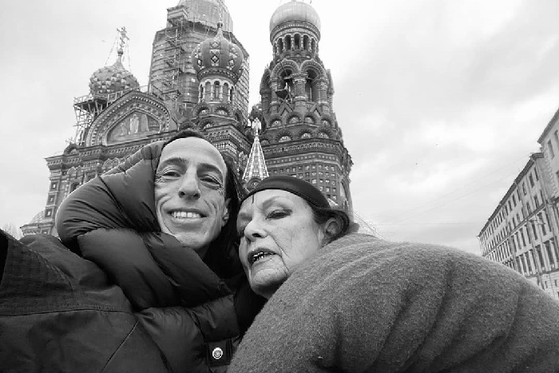

ПОЧАТОК БРЕНДУ RICK OWENS

- ПОЧАТОК БРЕНДУ RICK OWENS
Рік Оуенс народився у 1962 році в Каліфорнії, у досить жорсткій і консервативній родині.
З дитинства він почувався чужим:
не вписувався
тягнувся до похмурої естетики
цікавився мистецтвом, тілом, релігією, смертю
Спочатку навчався в Otis College of Art and Design, але кинув — класична мода його душила.
Потім пішов вивчати крій і конструювання, тобто базу.
Важливий момент:
Рік — не про гламур, він про форму, тіло і силует.
🪡 Початок бренду (1994–2000)
У 1994 році Рік починає шити сам у Лос-Анджелесі.
Не бренд, не покази — просто:
шкіряні куртки
топи
асиметричні речі
майже все чорне
Він продавав речі через маленькі магазини, іноді прямо знайомим.
Естетика:
брудна
сексуальна
готична
дуже тілесна
Це був андеграунд ЛА, а не модна індустрія.
- 🔥 Ключовий момент
У 2001 році:
Vogue Paris публікує його шкіряну куртку
її надягає Кейт Мосс
Це був вибух.
Після цього:
про нього дізнаються в Європі
зʼявляються перші серйозні замовлення
бренд Rick Owens офіційно починає існувати як імʼя
НАВІЩО він узагалі цим зайнявся
1. Він почувався аутсайдером
Рік ріс:
у жорсткій католицькій родині
у середовищі, де «нормальність» була обовʼязковою
Він був:
замкненим
не маскулінним у класичному сенсі
«не як усі»
Мода стала для нього способом виживання, а не карʼєрою.
Він не хотів «бути дизайнером».
Він хотів зібрати світ під себе, де можна існувати.
Одежa як продовження тіла
Рік завжди говорив і показував одне й те саме:
Тіло — це не обʼєкт для прикрашання,
а джерело сили й вразливості.
Звідси:
оголені частини тіла
розрізи
подовжені пропорції
речі, які ніби «обіймають» тіло
Він не приховує недосконалості, а підкреслює їх.
- 🕯 Антигламур і ненависть до фейку
Ріку огидна глянцева мода:
ідеальні моделі
усмішки
«успіх»
Він робить:
похмуре
важке
чесне
Його естетика — краса без брехні.
Rick Owens =
гідність для дивних
Він дає людям:
відчуття сили
право бути іншими
візуальну мову для внутрішнього конфлікту
Це одяг:
для тих, хто не вписується
але не хоче ховатися